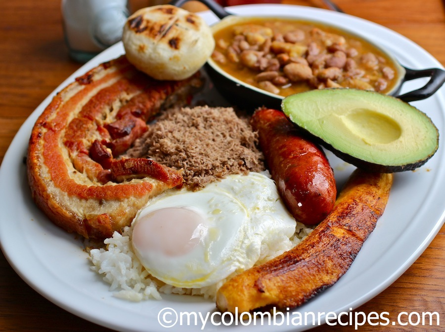

Bandeja Paisa
Bandeja paisa es algo que he comido toda mi vida, y si tuviera que elegir mi última comida en esta tierra, éste es el plato que eligiría sin ninguna duda. Tradicionalmente la Bandeja Paisa incluye frijoles, arroz blanco, chicharrón,carne en polvo, chorizo, huevo frito, plátano maduro, aguacate y arepa, pero se puede sustituir la carne en polvo por carne de res o de cerdo a la parrilla. Normalmente suelo hacer los frijoles y la carne en polvo el día anterior para que la receta sea más fácil.